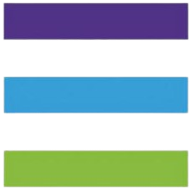

<div class="sidenav" [ngClass]="collapsed ? 'sidenav-collapsed':''">
  <div class="logo-container">
      <button class="logo" (click)="toggleCollapse()"> 
      </button>
      <div class="logo-text"  *ngIf="collapsed"></div>
      <button class="btn-close "@rotate *ngIf="collapsed" (click)="CloseSidenav()">
        <span class="k-icon k-i-close"></span> 
      </button>
  </div>
  <!-- *ngIf="(data.role !='C' && role=='Manager') || (data.role!='M' && role=='Coordinator') "-->
  <ul class="sidenav-nav">
      <li class="sidenav-nav-item" *ngFor="let data of navData">
          <a href="" class="sidenav-nav-link" [routerLink]="[data.routeLink]"  
            routerLinkActive="active" *ngIf="(data.role !='C' && role=='Manager') || (data.role!='M' && role=='Coordinator') "
            [routerLinkActiveOptions] ="{exact:true}" 
          >
              <span class="sidenav-link-icon" [class]="data.icon">  <kendo-badge themeColor="info" rounded="large" *ngIf="data.icon == 'k-icon k-i-saturation'"></kendo-badge></span> 

              <span class="sidenav-link-text"   *ngIf="collapsed">{{data.label}}</span>
          </a>
      </li>
  </ul>
 
</div>